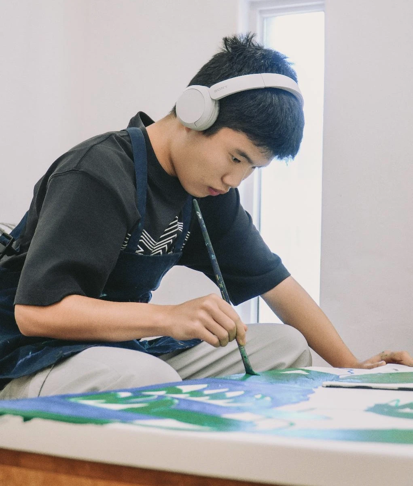
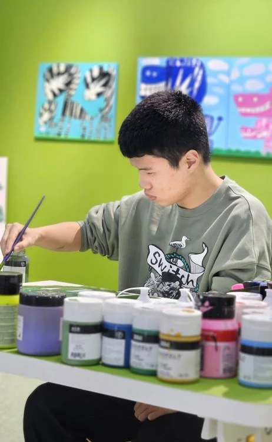

Spotlight: Yongwon Kim

1. Outside of your art practice, what activities or hobbies have you been enjoying the most lately?
To create artwork, I think it’s important to gain inspiration from new places and to stay physically healthy in everyday life. That’s why I enjoy traveling and exercising regularly. I especially like horseback riding and swimming.
2. Is there a favorite food you usually enjoy?
I like Korean food, and among them, kimchi stew is my favorite. I especially enjoy adding tomatoes to kimchi stew.
3. Among the places you’ve traveled to recently, which one was the most memorable or happiest for you? What made it special?
Last year, I went on a family trip to Bali, and it was wonderful because I could see lots of zebras, which I love. I also saw many other animals there, and what made it even better was that they all looked happy.
4. Among the animals you’ve drawn so far, is there one you find yourself drawing particularly often? Could you share a story related to it?
I draw all kinds of animals, but I tend to focus on one animal for a long period of time. When I was younger, I drew elephants thousands of times. Back then, whenever I went to the zoo, I would spend over three hours just watching elephants.
These days, I really like zebras and draw them a lot. Their sense of freedom and their mysterious stripes are very appealing to me.
5. Is there a place where you can concentrate especially well when drawing? (For example: your room, a desk, a quiet space, etc.)
I don’t really mind the place or the materials. Even in noisy environments, I can fall into my own world while drawing. That’s one of my strengths. At home, I usually spread my work out on the living room floor and draw there.
6. How did you feel when you encountered the “zebra” in the collaborative artwork with student Yang Siwoo at the exhibition?
It felt surprising and fascinating. It was truly an amazing piece of art. It was as if the zebra that had lived in my mind had run out onto the African savanna. Seeing the two works displayed together felt like one complete artwork.
7. Have you been trying any new styles or materials in your recent work? If so, what feels different about them?
Recently, I’ve been enjoying working by hand using charcoal and oil pastels. I want to express the feeling I sense from animals through my fingertips and bring out their liveliness.
The colors are more restrained and the overall mood feels wilder compared to my previous works, so it may feel different. However, the joy and happiness I express through free creation remain the same, so I hope viewers will also take interest in these new works.

1. 작품 활동 외에 요즘 가장 즐겁게 하는 활동이나 취미가 있나요?
작품 활동을 하기 위해서는 새로운 곳에서 좋은 영감을 받고, 평상시 체력을 기르는 게 중요하다고 생각합니다. 그래서 여행 가는 걸 좋아하고, 운동도 열심히 하고 있습니다. 특히 승마와 수영을 좋아합니다.
2. 평소에 좋아하는 음식이 있다면 알려주세요.
한식을 좋아하는데 그중에서도 김치찌개를 좋아합니다. 김치찌개에 토마토를 넣어 먹는 것을 좋아해요.
3. 최근에 다녀온 여행지 중 가장 기억에 남거나 행복했던 곳은 어디였나요? 그곳이 특별했던 이유도 궁금해요.
작년에 가족과 발리로 여행을 갔는데, 제가 좋아하는 얼룩말을 실컷 볼 수 있어서 정말 좋았습니다. 그곳에서 여러 동물들을 보았는데, 다들 표정이 행복해 보였던 것이 더 좋았습니다.
4. 지금까지 그려왔던 동물들 중에서 특히 자주 그리게 된 동물이 있나요? 그 동물과 관련된 이야기를 들려주세요.
저는 모든 동물을 그리지만, 특히 한 동물을 오랜 기간 그리는 편입니다. 어린 시절에는 코끼리를 수천 장 그렸습니다. 그때는 동물원에 가면 코끼리만 3시간 넘게 보고 오곤 했어요.
요즘은 얼룩말을 좋아해서 많이 그립니다. 얼룩말의 자유로움과 신비한 줄무늬가 매력적입니다.
5. 그림을 그릴 때 집중이 잘 되는 장소가 있나요? (예: 방, 책상, 조용한 공간 등)
저는 장소와 재료를 가리지 않는 편입니다. 시끄러운 곳에서도 나만의 세계로 빠져들 수 있어요. 그게 제 장점이기도 합니다. 집에서는 주로 거실 바닥에 크게 펼쳐놓고 그리는 편입니다.
6. 전시장에서 양시우 학생의 협업 작품 속 ‘얼룩말’을 마주했을 때 어떤 기분이 들었나요?
놀랍고 신기했습니다. 정말 멋진 그림이었습니다. 제 머릿속에 살던 얼룩말이 아프리카 초원으로 뛰어나간 느낌이었어요. 둘이 같이 걸려 있는 게 하나의 완성된 작품처럼 느껴졌습니다.
7. 요즘 새롭게 시도해 보는 작품 스타일이나 재료가 있나요? 있다면 어떤 점이 달라졌는지도 궁금해요.
요즘은 목탄과 오일파스텔을 이용해 손으로 작업하는 것을 즐깁니다. 제가 느끼는 동물의 느낌을 손끝으로 표현해 그 생동감을 살리고 싶어요.
컬러감이 적게 들어가고 더 야생적인 느낌이라 기존 작품들과는 다르다고 느끼실 수 있습니다. 하지만 자유롭게 작업하며 즐거움과 행복감을 표현하는 점은 기존과 같으니, 새로운 작업들도 관심 있게 봐주시면 좋겠습니다.